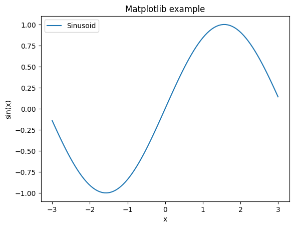

Intro to Google Colab and Python for applied scientists
(Some thoughts on elements of a friendly Python Stats Bootcamp)
HARUG!
2023-08-02
0 Objectives
The aim of this notebook is to illustrate the basic use of Colab and Python for beginners. The material is designed for applied scientists, students, instructors and other interesting people.
Objectives
A simple data example of a “legitimate task” involving data
Illustrate basic use of Colab and Python by example
Reinforcement of concepts with simple quiz questions
Introduce some chatGPT prompts
Resources for further study in different modes of learning
Jupyter notebooks (the name of this kind of file) and Google Colab are a great way to learn Python. Notebooks are a great way to mix executable code with rich contents (HTML, images, equations written in LaTeX). Colab allows you to run notebooks on the cloud for free without any prior installation.
1 Simple data example
The document that you are reading is not a static web page, but an interactive environment called a notebook, that lets you write and execute code. Notebooks consist of so-called code cells, blocks of one or more Python instructions. For example, here is a code cell that stores the result of a computation (the number of seconds in a day) in a variable and prints its value:
The following code is to read in a small dataset looking at potato sizeand will:
Print the first few lines of data
Create a graph looking at the relationship between the number of potatoes and the total weight of potatoes a single potato plant produces.
Print the results of linear regression on these variables.
Click on the “play” button to “execute” the code in the cell below. You should be able to see the result. Alternatively, you can also execute the cell by pressing Ctrl + Enter if you are on Windows / Linux or Command + Enter if you are on a Mac.
NB don’t worry about understanding the code for now, let’s just run it and see what it does…
# !pip install pandas# !pip install matplotlib# !pip install scipyimport matplotlib.pyplot as pltimport pandas as pdfrom scipy.stats import linregress# You'll need to drag the file 'tuber_50.xlsx' into the Colab folder to the leftdata = pd.read_excel('tuber_50.xlsx', sheet_name='data')print(data.head())# Extracting the 'tot_count' and 'tot_wt' columns for the scatter plottot_count = data['tot_count']tot_wt = data['tot_wt']# Perform linear regressionslope, intercept, r_value, p_value, std_err = linregress(tot_count, tot_wt)# Create a line representing the linear regression fitline_fit = slope * tot_count + intercept# Creating the scatter plotplt.scatter(tot_count, tot_wt)plt.plot(tot_count, line_fit, color='red', label='Linear Regression Fit')# Creating the scatter plotplt.xlabel('Total Count')plt.ylabel('Total Weight')plt.title('Scatter plot of Total Count vs. Total Weight')plt.grid(True)plt.show()# Print regression resultsprint(f"Slope: {slope}")print(f"Intercept: {intercept}")print(f"R-value: {r_value}")print(f"P-value: {p_value}")print(f"Standard Error: {std_err}")
Note that the order of execution is important. For instance, if we do not run the cell storing seconds_in_a_day beforehand, the above cell will raise an error, as it depends on this variable. To make sure that you run all the cells in the correct order, you can also click on “Runtime” in the top-level menu, then “Run all”.
Try this (exercise)!
Add a cell below this cell: click on this cell then click on “+ Code”. In the new cell, compute and display the number of seconds in a year by reusing the variable seconds_in_a_day. Run the new cell.
3 Python tricks
Python is one of the most popular programming languages for machine learning, both in academia and in industry. As such, it is essential to learn this language for anyone interested in machine learning. In this section, we will review Python basics.
Lists are a container type for ordered sequences of elements. Lists can be initialized empty
my_list = []
or with some initial elements
my_list = [1, 2, 3]
Lists have a dynamic size and elements can be added (appended) to them
my_list.append(4)my_list
We can access individual elements of a list (indexing starts from 0)
my_list[2]
We can access “slices” of a list using my_list[i:j] where i is the start of the slice (again, indexing starts from 0) and j the end of the slice. For instance:
my_list[1:3]
Omitting the second index means that the slice should run until the end of the list
my_list[1:]
We can check if an element is in the list using in
5in my_list
The length of a list can be obtained using the len function
len(my_list)
Strings
Strings are used to store text. They can be delimited using either single quotes or double quotes
string1 ="some text"string2 ='some other text'
Strings behave similarly to lists. As such we can access individual elements in exactly the same way
string1[3]
and similarly for slices
string1[5:]
String concatenation is performed using the + operator
string1 +" "+ string2
Conditionals
As their name indicates, conditionals are a way to execute code depending on whether a condition is True or False. As in other languages, Python supports if and else but else if is contracted into elif, as the example below demonstrates.
Here < and > are the strict less and greater than operators, while == is the equality operator (not to be confused with =, the variable assignment operator). The operators <= and >= can be used for less (resp. greater) than or equal comparisons.
Contrary to other languages, blocks of code are delimited using indentation. Here, we use 2-space indentation but many programmers also use 4-space indentation. Any one is fine as long as you are consistent throughout your code.
Loops
Loops are a way to execute a block of code multiple times. There are two main types of loops: while loops and for loops.
While loop
i =0while i <len(my_list):print(my_list[i]) i +=1# equivalent to i = i + 1
For loop
for i inrange(len(my_list)):print(my_list[i])
If the goal is simply to iterate over a list, we can do so directly as follows
for element in my_list:print(element)
Functions
To improve code readability, it is common to separate the code into different blocks, responsible for performing precise actions: functions. A function takes some inputs and process them to return some outputs.
def square(x):return x **2def multiply(a, b):return a * b# Functions can be composed.square(x = multiply(a =3, b =2))
36
To improve code readability, it is sometimes useful to explicitly name the arguments
square(multiply(a=3, b=2))
Try this (exercise)!
Exercise 1. Using a conditional, write the relu function defined as follows
def relu(x):# Write your function herereturnrelu(-3)
Exercise 2. Using a for loop, write a function that computes the Euclidean norm of a vector, represented as a list.
def euclidean_norm(vector):# Write your function herereturnmy_vector = [0.5, -1.2, 3.3, 4.5]# The result should be roughly 5.729746940310715euclidean_norm(my_vector)
Exercise 3. Using a for loop and a conditional, write a function that returns the maximum value in a vector.
def vector_maximum(vector):# Write your function herereturn
Bonus exercise. if time permits, write a function that sorts a list in ascending order (from smaller to bigger) using the bubble sort algorithm.
def bubble_sort(my_list):# Write your function herereturnmy_list = [1, -3, 3, 2]# Should return [-3, 1, 2, 3]bubble_sort(my_list)
NumPy is a popular library for storing arrays of numbers and performing computations on them. Not only does this enable to write often more succinct code, this also makes the code faster, since most NumPy routines are implemented in C for speed.
To use NumPy in your program, you need to import it as follows
import numpy as np
Array creation
NumPy arrays can be created from Python lists
my_array = np.array([1, 2, 3])my_array
NumPy supports array of arbitrary dimension. For example, we can create two-dimensional arrays (e.g. to store a matrix) as follows
import numpy as npfrom matplotlib import pyplot as pltx_values = np.linspace(-3, 3, 100)plt.figure()plt.plot(x_values, np.sin(x_values), label="Sinusoid")plt.xlabel("x")plt.ylabel("sin(x)")plt.title("Matplotlib example")plt.legend(loc="upper left")plt.show()

We continue with a rudimentary scatter plot example. This example displays samples from the iris dataset using the first two features. Colors indicate class membership (there are 3 classes).